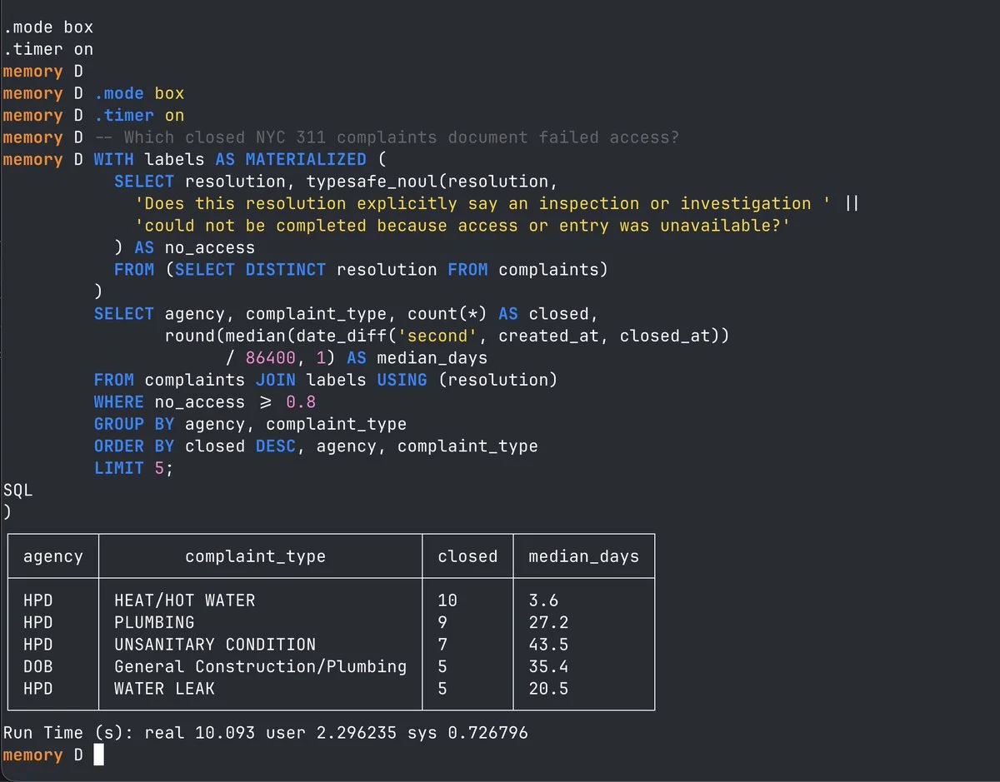

このUIがしていること
判断は、SQLの中の1つの列として現れる。分析する人は、チャットや別の画面に移らず、ふだんのSQLの中で、文章の列を条件に変え、そのまま結合と集計につなげる。
- 問いは、SQLの文字列としてそのまま残る。何を尋ねたかが、クエリを読めば分かる。
- しきい値（0.8）も、SQLの中に書かれている。どこで切ったかが明示され、書き換えて再実行できる。
- 重複を除いてから判断に渡し、結果を結合で戻している。同じ文章を何度も判断しない工夫が、SQLの書き方として見える。
- 表に出るのは集計だけで、どの行が当てはまると判断されたか、確率がどう分布したかは出ていない。0.8の近くの行を見直す手段や、判断を保留する経路は、画像にはない。これがこの事例の主な限界である。
- 集計の結果は、判断の誤りを含んだまま数字になる。件数や中央値が確かな事実のように読めてしまう点に注意が要る。
キャプチャ
{kind=link}

（原寸の画像を開く）見る箇所コメントの問い「Which closed NYC 311 complaints document failed access?」、`typesafe_noul(resolution, '…')` の呼び出し、`SELECT DISTINCT resolution` での絞り込み、`WHERE no_access ≥ 0.8`、集計の表、下端の「Run Time (s): real 10.093」
入力から画面の変化まで
-
判断への入力
complaintsテーブルのresolution列（苦情の対応結果の文章）と、英語の問い「この対応結果は、立ち入りができずに検査や調査を完了できなかったと明示しているか」。重複を除いたresolutionだけを判断に渡している。
-
Jevの判断
typesafe_noulが、resolutionごとに、問いに当てはまる確率を返す。SQLはそれをno_accessという列にしている。 -
結果がUIをどう変えるか
no_access ≥ 0.8の行を、機関と苦情の種類でまとめ、件数と、解決までの日数の中央値を出した表（例：HPD・HEAT/HOT WATER・10件・3.6日）。実行時間は「real 10.093」秒。
- 判断型の見立て
- Noul出典に明記
- 画像のSQLに typesafe_noul という関数名が書かれている。
Jevとの適合
行ごとに、はい・いいえの確率を返す判断は、SQLの関数と相性がよい。作者は、約1,000行で10秒ほどと述べ、LLMを使うより速く、分類器を用意するより手軽だとしている。速度と比較は作者の報告であり、こちらでは確かめていない。
確認範囲と未確認事項
作者による投稿の画像1枚を確認。公開されたリポジトリやデモは確認されていない。画像に出ているのは、SQLと集計の結果と実行時間だけである。行ごとの確率を見直す手段、判断を保留する経路は、画像に出ていない。約1,000行で10秒ほどという速度は作者の報告で、こちらでは測っていない。
- 確認済み投稿の画像1枚に見える内容（DuckDBのSQL、
typesafe_noulの呼び出しと問いの文、しきい値0.8、集計の表、実行時間10.093秒） - 未検証判断の妥当性、行ごとの確率と分布、見直しや保留の手段、速度の実測、拡張のソースコードとリポジトリ、他のデータでの動作
- 推定扱いなし。質問型は、SQLに書かれた関数名（typesafe_noul）による
- 引用投稿の画像を引用。権利は作者に帰属する